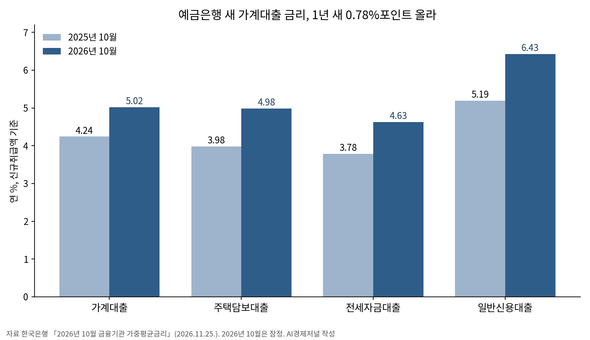
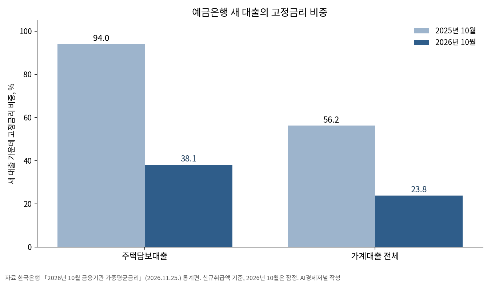

기준금리 3.25%로 0.25%포인트 인상, 새 가계대출 76%는 변동금리
7월부터 세 차례 0.75%포인트 인상, 위원 2명은 동결 의견
10월 새 주택담보대출 금리 4.98%, 1년 새 1%포인트 상승
새 주택담보대출 고정금리 비중 94.0%에서 38.1%로 하락
AI경제저널=김갑봉 기자 | 한국은행 금융통화위원회가 26일 기준금리를 연 3.00%에서 3.25%로 올렸다. 올해 7월과 8월에 이어 세 번째 인상이다.
변동금리 대출은 코픽스 같은 지표금리가 바뀌면 이자도 바뀐다. 한국은행 통계를 보면 10월 예금은행이 새로 내준 가계대출의 76.2%가 변동금리 대출이다.
1년 전에는 새 가계대출의 56.2%가 고정금리였다. 같은 기간 새 주택담보대출 금리는 연 3.98%에서 4.98%로 올랐다.
세 차례 인상, 넉 달 남짓 0.75%포인트
금통위는 결정문에서 국내경제 성장세가 한층 강해졌다고 밝혔다. 물가상승률은 상당 기간 목표 수준을 웃돌 것으로 내다봤다. 금융안정 쪽 위험도 이어진다고 판단했다.
기준금리는 2025년 5월 29일 2.50%로 내린 뒤 1년 넘게 그대로였다. 올해 7월 16일 2.75%, 8월 27일 3.00%로 올랐다. 이번에 3.25%가 됐다.
한국은행은 올해 성장률 전망을 8월 3.3%에서 3.9%로 높였다. 내년 전망은 2.9%에서 4.1%로 올렸다. 내년 소비자물가 상승률 전망도 2.3%에서 2.4%로 올렸다.
결정은 만장일치가 아니다. 금통위원 5명이 인상에 찬성했다. 황건일 위원과 이수형 위원은 기준금리를 3.00%로 유지하는 것이 바람직하다는 의견을 냈다.
금통위는 금융·외환시장에서 주요 가격변수의 변동성이 커졌다고 밝혔다. 주가는 글로벌 인공지능(AI) 투자 둔화 우려로 크게 떨어졌다고 했다. 원/달러 환율은 대체로 안정세를 유지했다고 했다.
새 가계대출 금리 5.02%
10월 예금은행 새 가계대출 금리는 연 5.02%로 9월보다 0.06%포인트 올랐다. 1년 전 4.24%보다 0.78%포인트 높다(AI경제저널 계산).
대출 종류별 1년 오름폭은 일반신용대출이 가장 크다. 5.19%에서 6.43%로 1.24%포인트 높다. 주택담보대출은 3.98%에서 4.98%로 1.00%포인트 높다(AI경제저널 계산).

비은행 일반대출 금리도 상호금융을 빼고 올랐다. 10월 상호저축은행 일반대출 금리는 연 10.15%로 9월보다 0.35%포인트 높다. 새마을금고는 5.12%로 0.15%포인트 높다.
새 가계대출 고정금리 비중 23.8%
예금은행 새 주택담보대출의 고정금리 비중은 2025년 10월 94.0%였다. 올해 10월에는 38.1%다. 새 가계대출 전체로는 1년 전 56.2%, 올해 10월 23.8%다.
10월 새 가계대출 가운데 시장금리 연동은 25.0%, 수신금리 연동은 50.7%다. 수신금리 연동의 대표가 코픽스(COFIX, 은행 자금조달비용지수)다.
10월 말 예금은행 가계대출 잔액의 고정금리 비중은 41.8%로 1년 전 46.9%보다 5.1%포인트 낮다(AI경제저널 계산). 나머지 58.2%는 변동금리 대출이다.

금리 인상이 가계 지출에 닿는 길
마르틴 플로덴(Martin Flodén) 등 스웨덴 연구진 4명은 가계의 대차대조표와 소비지출 행정자료를 분석했다. 논문은 2021년 『이코노믹 저널』에 실렸다.
정책금리가 1%포인트 오르면 빚 있는 가계는 빚 없는 가계보다 소비지출을 평균 0.23~0.55%포인트 더 줄였다. 반응은 주로 변동금리 대출 비중이 큰 가계에서 나왔다.
국내 새 주택담보대출 평균 금리는 1년 사이 3.98%에서 4.98%로 올랐다. 같은 3억원을 두 시점에 새로 빌리면 첫해 이자는 1194만원과 1494만원이다(AI경제저널 계산).
차이는 해마다 300만원, 달마다 25만원이다. 원금 상환을 빼고, 금리가 1년 내내 그대로라고 보고 이자만 센 값이다. 10월 새 주택담보대출 금리는 고정형 5.13%, 변동형 4.90%다.
예금 이자도 올랐다. 10월 예금은행 새 저축성수신금리는 연 3.62%로 9월보다 0.17%포인트 높다. 기업·가계를 합한 새 대출금리 4.64%에서 이 금리를 빼면 1.02%포인트다.
가계빚도 늘었다. 한국은행 「2026년 3/4분기중 가계신용(잠정)」에서 9월 말 가계신용 잔액은 2030조5000억원이다. 6월 말보다 9조8000억원 많다.
추가 인상 시기, 물가와 금융안정 점검하며 결정
금통위는 물가·경기 흐름과 금융안정 상황을 점검하면서 추가 인상의 시기 등을 정하겠다고 밝혔다. 수도권 주택시장, 가계부채와 관련한 금융불균형 위험에도 계속 유의한다고 했다.
10월 금리 통계는 이번 인상 전 수치다. 10월 통계에는 이번 인상이 반영되지 않았다. 10월 새 가계대출 가운데 고정금리는 23.8%였다.
참고문헌
- 한국은행 경제통계1국 금융통계부 금융통계팀, "2025년 10월 금융기관 가중평균금리", 2025.11.26., https://www.bok.or.kr/portal/bbs/B0000501/view.do?nttId=10094754&menuNo=201264
- 한국은행, 「예금은행 고정 및 변동금리대출 비중(신규취급액 기준)」, 국가통계포털(KOSIS), https://kosis.kr/statHtml/statHtml.do?orgId=301&tblId=DT_121Y010 (2026.11.26. 접속)
- Flodén, M., Kilström, M., Sigurdsson, J., Vestman, R., 「Household Debt and Monetary Policy: Revealing the Cash-Flow Channel」, 『The Economic Journal』 131권 636호, Royal Economic Society, 2021, 1742~1771쪽, https://doi.org/10.1093/ej/ueaa135
- 한국은행 정책총괄팀, "통화정책방향(2026.11.26)", 2026.11.26., https://www.bok.or.kr/portal/bbs/P0000559/view.do?nttId=11067084&menuNo=200690
- 한국은행 경제통계1국 금융통계부 금융통계팀, "2026년 10월 금융기관 가중평균금리", 2026.11.25., https://www.bok.or.kr/portal/bbs/B0000501/view.do?nttId=11066953&menuNo=201264
- 한국은행, "한국은행 기준금리 추이", 2026.11.26. 확인, https://www.bok.or.kr/portal/singl/baseRate/list.do?dataSeCd=01&menuNo=200643
- 한국은행 경제통계1국 금융통계부 금융통계팀, "2026년 3/4분기중 가계신용(잠정)", 2026.11.18., https://www.bok.or.kr/portal/bbs/B0000501/view.do?nttId=11066748&menuNo=201264
[사진 출처]
- [사진 1] 재정경제부
※ 이 기사는 AI 프로그램 클로드를 활용해 작성했습니다.
관련기사
- [가계부채] 다시 늘어난 빚 6조4000억원과 0.61%포인트 오른 대출 이자
- 가계대출 한 달 새 6조4000억원 증가, 신용대출 다시 늘어
- [가계부채 브리핑②] 금리 인상기 가계·기업 대출금리 격차와 회사채 대신 늘어난 대기업 은행 대출
- [가계부채 브리핑] 가계대출 9개월 만에 2조2000억원 감소, 주택담보대출은 3조3000억원 늘어
저작권자 © AI경제저널 무단전재 및 재배포, AI학습 및 활용 금지